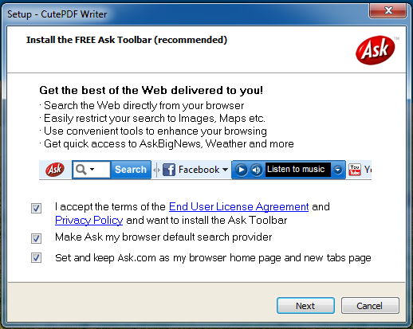

"Printing" files on PDF-printers is useful as you can save everything as a digital PDF file instead of printing it.
I've just installed Typing Test TQ for testing my typing speed and I wanted to save my results. This wasn't possible, but I could print them. So I thought I could print it to a PDF file and store it this way on my computer. Once again, I didn't think of Microsoft.
The Linux-Way
How would you solve this problem on a Debian machine? Well, most Debian machines would have a PDF printer pre-installed. So you would simply click on print, choose the PDF printer and be happy.
If it is not pre-installed, type:
sudo apt-get install cups-pdf
Now you can use a PDF printer.
Done. It works.
The Windows-Way
Windows 7 does not have a PDF printer, but it has a "Microsoft XPS Document Writer". Let's see what this is:
XPS
General Information
Open XML Paper Specification is an open specification for a page description language and a fixed-document format originally developed by Microsoft as XML Paper Specification (XPS) that was later standardized by Ecma International as international standard ECMA-388. It is an XML-based specification, based on a new print path and a color-managed vector-based document format that supports device independence and resolution independence. OpenXPS was standardized as an open standard document format on June 16, 2009.
XPS vs. PDF
- Comparison of OpenXPS and PDF
- XPS vs PDF. What's the status? on superusers
TL;DR
XPS is an alternative for PDF. It lacks program support compared to PDF.
Getting a PDF-Printer
After a quick search, I found CutePDF. Seems to work, but I don't give any malware-freeness-guarantees.
Although I don't know if there is malware, there is definitely some spam content:
{kind=link}

Why can't it simply only install a PDF-printer without getting annoyed with toolbars? I never had this problem on Linux...